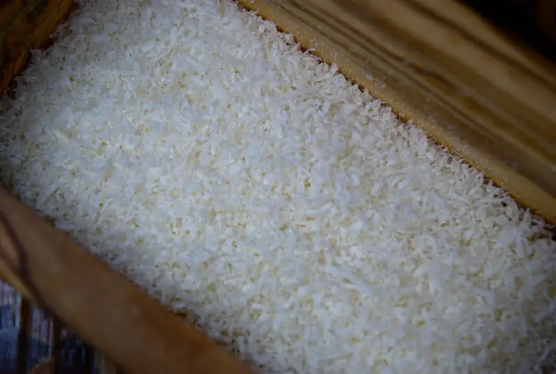

Parmesano

{kind=link}
Ahh parmesano.. o Parmiggiano-Reggiano como le dicen los italianos. Y si, ya me he quejado de esto antes, es mil (o mas) veces mejor usar de este que del aserrín del bote verde, es tan sencillo como que si un producto te dice que no tiene relleno... tiene relleno... así que mejor consíguete un pedazo del queso de adeverasssss y rállalo tu mismo, te aseguro que no te vas a arrepentir; a menos que te raspes los nudillos, pero en ese caso tienes peores cosas de que preocuparte de que le caiga aserrín a tu pasta :P
Y para que no vaya a haber mal-entendido con los "vegetarianos" (entíendase por no-veganos), este queso tradicionalmente se hace con cuajo... si, flora estomacal de vacas bebés... se usa para muchos, muchos tipos de queso; a mi no me importa, pero si eres fiel a tu causa , si te debería importar.
Sorprendentemente, no es una D. O. C. (Denominazione Di Origine Controllatta como los vinos, pero si es una denominación de origen protegida que indica ciertos métodos de preparación. En la wiki que menciono al principio dice que además del cuajo, también se debe hacer a partir de leche de vacas que solo coman pasto...eso.. es bueno, no?
En ese wiki también viene una lista de usos típicos, tales como espolvorearlo sobre pasta (apoco?), hacer risotto o comerlo solo con vinagre balsámico que tampoco es gran sorpresa si el Parmesano lo hacen en regiones cercanas a Modena, donde hacen el vinagre balsámico bueno . Como regla general, las combinaciones tradicionales son MUY buenas, se han ido refinando durante décadas y décadas, si no es que siglos.